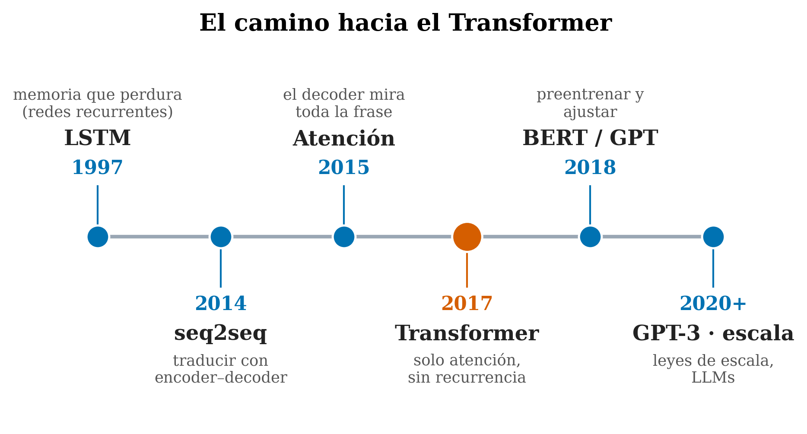

2 El panorama: qué es un transformer y por qué ganó
Dónde empezamos. Este es el punto de partida del libro. Antes de abrir el motor pieza a pieza, conviene ver el coche entero: qué problema resuelve un transformer, de dónde viene, y por qué —en apenas unos años— desplazó a todo lo anterior y se convirtió en la base de ChatGPT, los traductores, los modelos de imagen y casi toda la IA moderna. No hay fórmulas aquí; solo el mapa. Los detalles llegan en los capítulos siguientes.
2.1 La idea en una frase
Un transformer es una red neuronal que procesa una secuencia (un texto, por ejemplo) mirando todas sus partes a la vez y aprendiendo, en cada paso, a qué partes prestar atención. Esa capacidad de atender a lo relevante, sin importar lo lejos que esté, es lo que lo cambió todo —y lo que da nombre a este libro—.
2.2 Conceptos clave y su papel en el transformer
Antes de entrar en detalle, definimos los términos de este capítulo y para qué sirve cada uno dentro de un transformer:
- Secuencia. Definición: una serie de elementos en orden (las palabras de un texto, por ejemplo), donde el sentido de cada uno depende de los demás. En el transformer: es la entrada que el modelo debe entender; todo el diseño existe para relacionar partes de una secuencia, a veces muy alejadas.
- RNN / LSTM. Definición: redes neuronales que leen la secuencia palabra a palabra, arrastrando una “memoria” que actualizan en cada paso. En el transformer: son lo que vino antes; entender sus dos límites —memoria que se diluye y procesado en serie— explica por qué hizo falta algo nuevo.
- Atención. Definición: el mecanismo que deja a un modelo mirar toda la secuencia y decidir a qué partes hacer caso en cada paso. En el transformer: es su pieza central —y la de este libro—; lo que permite conectar palabras lejanas sin que la información se pierda por el camino.
- Recurrencia. Definición: procesar la secuencia en orden, donde cada paso depende del resultado del anterior. En el transformer: es justo lo que se eliminó; sin esa dependencia “paso a paso”, el modelo puede trabajar en paralelo.
- Paralelismo. Definición: hacer muchos cálculos a la vez en lugar de uno tras otro. En el transformer: al quitar la recurrencia, procesa todas las palabras a la vez, lo que encaja con las GPU y hace práctico entrenar con muchísimos datos.
- Leyes de escala. Definición: la observación de que estos modelos mejoran de forma predecible al hacerse más grandes y darles más datos. En el transformer: es la razón de que escalar valiera la pena, y de ahí salieron los LLM actuales.
- Bloque (capa). Definición: la unidad que se repite muchas veces en el modelo, con dos partes —atención y red feed-forward—. En el transformer: es donde ocurre lo esencial; apilar bloques es lo que le da profundidad y capacidad.
Con esto en mano, los desarrollamos.
2.3 El problema de fondo: entender una secuencia
Casi todo lo interesante en lenguaje es una secuencia: las palabras vienen en orden y su significado depende del contexto. En la frase “dejé el libro en el banco”, ¿es un banco de dinero o de sentarse? Solo el resto de la frase lo dice. Una máquina que quiera entender o generar lenguaje necesita, por tanto, relacionar cada palabra con las demás —a veces con palabras muy alejadas—.
Durante décadas, el reto fue justamente ese: ¿cómo conectar información que está lejos en la secuencia? La historia de cómo se resolvió es la historia que lleva al transformer.
2.4 Antes del transformer: leer palabra a palabra (RNN y LSTM)
Los primeros modelos neuronales de lenguaje eran redes recurrentes (RNN, y su versión mejorada, las LSTM (Hochreiter y Schmidhuber 1997)). Funcionaban como un lector que va palabra por palabra llevando una “memoria” mental que actualiza en cada paso.
🧩 Analogía. Imagina leer un libro por una rendija que solo deja ver una palabra cada vez, e intentar recordar todo lo anterior de cabeza. Funciona para frases cortas, pero lo que leíste hace muchas palabras se va desvaneciendo.
Esto traía dos problemas serios:
- La memoria larga se diluye. Conectar el final de un párrafo con su principio era difícil: la información lejana se difumina (el famoso problema del gradiente que se desvanece).
- No se podía paralelizar. Como cada paso depende del anterior, había que procesar la secuencia en orden, uno a uno —lento, e incapaz de aprovechar las GPU, que brillan haciendo muchas cosas a la vez—.
2.5 La chispa: dejar que el modelo “mire atrás” (la atención)
Para traducir, se popularizó el esquema encoder–decoder (seq2seq) (Sutskever et al. 2014): una red resume toda la frase de origen en un único vector, y otra lo expande al idioma destino. Pero meter una frase entera en un solo vector es un cuello de botella: se pierde detalle.
La solución, en 2014–2015, fue la atención (Bahdanau et al. 2015): en vez de depender de ese único resumen, dejar que el decoder, en cada palabra que genera, mire toda la frase de origen y decida a qué palabras hacer caso. Fue la primera vez que un modelo aprendía explícitamente dónde mirar. Funcionó tan bien que surgió la pregunta audaz que lo cambiaría todo.
2.6 2017: “Attention Is All You Need”
En 2017, un grupo de Google publicó un artículo con un título que era casi una provocación: “Attention Is All You Need” (Vaswani et al. 2017) (“la atención es todo lo que necesitas”). Su propuesta: eliminar por completo la recurrencia y construir el modelo solo con atención. Ese modelo era el Transformer.

2.7 Por qué ganó
Quitar la recurrencia tuvo tres consecuencias enormes:
- Paralelismo. Sin la dependencia “paso a paso”, el transformer procesa todas las palabras a la vez. Eso encaja a la perfección con las GPU → entrenar con muchísimos más datos se volvió práctico.
- Alcance largo directo. Con atención, cualquier palabra puede conectarse con cualquier otra en un solo paso, sin que la información se diluya por el camino. El problema de la memoria larga se atacaba de frente.
- Escala. Resultó que, al hacerlos más grandes y darles más datos, los transformers seguían mejorando de forma predecible (las leyes de escala). Eso disparó BERT y GPT (2018), GPT-3 (Brown et al. 2020) y los LLM actuales.
El transformer ganó no por ser “más listo” en pequeño, sino por paralelizar (aprovechar las GPU) y escalar (mejorar al crecer) mejor que nada anterior. La atención fue el mecanismo que hizo ambas cosas posibles.
2.8 Qué es un transformer, a vista de pájaro
Aunque dedicaremos un capítulo a cada pieza, este es el plano que iremos abriendo:
- Tokens — el texto se parte en trozos y se convierte en números (Capítulo 2).
- Embeddings — cada token se convierte en un vector, y se le añade su posición (Capítulo 3).
- Una pila de bloques, repetidos muchas veces, donde ocurre lo esencial. Cada bloque tiene dos partes:
- Atención — cada token mira a los demás y mezcla su información (el corazón del libro).
- Red feed-forward (FFN) — cada token procesa lo que ha recogido. …con conexiones residuales y normalización que mantienen todo estable (Capítulos 4–9).
- Salida — a partir de los vectores finales, el modelo predice (p.ej., la siguiente palabra) (Capítulo 12).
🧩 Analogía. Si una RNN leía por una rendija, un transformer extiende toda la página sobre la mesa y, para cada palabra, traza líneas hacia las que le importan. Este libro trata, sobre todo, de cómo se trazan esas líneas —y de qué pasa con ellas cuando la página se hace muy, muy larga—.
2.9 Por qué este libro gira en torno a “atender”
Casi todos los manuales dedican un capítulo a la atención y siguen. Aquí hacemos lo contrario: la atención —y en particular cómo se comporta a lo largo de la distancia— es la columna vertebral. Es donde están las preguntas abiertas interesantes (¿por qué se rompen los modelos con textos muy largos? ¿cómo comprimir su memoria?) y donde aportamos medidas y herramientas propias. Pero vamos por orden: primero, los cimientos.
2.10 Resumen
- El reto del lenguaje es relacionar partes de una secuencia, a veces muy alejadas.
- Las RNN/LSTM lo hacían leyendo palabra a palabra: memoria que se diluye y sin paralelismo.
- La atención (2014–2015) dejó al modelo mirar toda la frase y elegir dónde fijarse.
- El Transformer (2017) tiró la recurrencia y se construyó solo con atención: paralelizable, con alcance largo directo, y que mejora al escalar —de ahí los LLM actuales—.
- A vista de pájaro: tokens → embeddings → pila de bloques (atención + FFN) → salida.
Siguiente (Capítulo 2): empezamos por el principio del todo —cómo se convierte tu texto en los números (tokens) que el modelo puede procesar—.
2.11 Para pensar
- ¿Por qué la imposibilidad de paralelizar las RNN era un problema práctico tan grande en la era de las GPU? (Pista: ¿qué hace bien una GPU?)
- La atención permite conectar dos palabras lejanas “en un solo paso”. ¿Qué crees que costará eso cuando la secuencia tenga miles de palabras? (Lo veremos en la Parte II.)